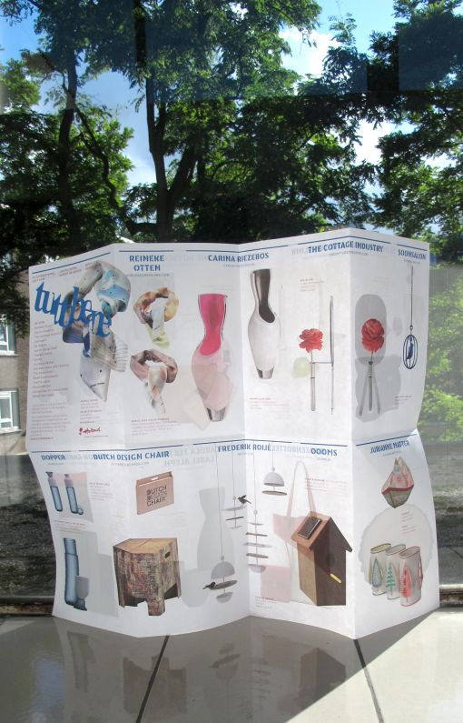
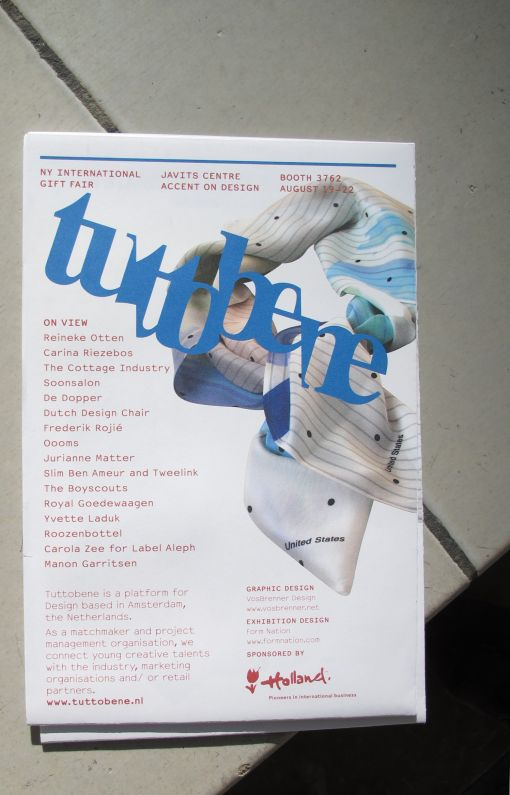

This folded poster design was created for Tuttobene Amsterdam,presenting themselves for the first time during the New York International Gift Fair at Javits Center in summer 2012. Exhibition design by Form Nation NYC.
2012 / New York City / furniture design / interiour / international / poster / Printed Matter / textiles
Flyer designed for the exhibition Become Immersed Look Deeper. A show curated by Caroline von Courten for the Goethe Institute Rotterdam during Museumnight.
BILD is a reaction on the ubiquitous amount of images that flow into us as we consume a large extent unconsciously and unnoticed.
http://www.goethe.de/ins/nl/ams/ver/nl8719779v.htm
2012 / international / invitation / photography / Printed Matter
Stencil Flyer made for the upcoming book-presentations at PrintRoom, Rotterdam.
2011 / invitation / non-profit / Rotterdam / Printed Matter / PrintRoom
Invite Design for Lens Based Media Exhibition from the final students of Piet Zwart in Tent. Rotterdam.
2011 / educational-institution / Tent. / international / invitation / Rotterdam / Printed Matter
We zijn gefascineerd door het idee van een eetbare stad. Niet alleen in het zelf verbouwen van groente maar juist ook door de planten die er al staan. In ons onderzoek kwamen we erachter dat de meeste veldgidsen onduidelijke plaatjes en ingewikkelde beschrijvingen hadden.
Met het project Citysalad doen we een poging de eetbare plant voor het grote publiek op de kaart de zetten; met duidelijke foto�s en lekkere recepten!Dit blog laat onze zoektocht zien naar eetbare planten, het ontwikkelen van recepten en andere inspirerende initiatieven die zich bezig houden met eetbare planten, stadslandbouw en fooddesign.
Citysalad is een project van Nele Vos en Tanja Koning.
2011 / Citysalad / Rotterdam / photography / Printed Matter
Poster and "Daumenkino's" produced for the Flip Collection presented at PrintRoom organized during the IFFR XXL program.
2011 / international / non-profit / Rotterdam / poster / Printed Matter / PrintRoom
"Need some time for reflection? Intellectual stimulation? Or maybe just candy for your retina? Drop by the Ro-Co movie night. There�s no fixed program; what you see is what you get."
Flyer for the WYSIWYG filmnight series at Rot(t)terdam / Roodkapje - organized by the Rotterdam Collective. Every thursday free popcorn was served, which could then directly be eaten with the flyer as a paperbag.
2010 / Rotterdam / participation / Printed Matter / self-initiated
Kosmopolis is an unconventional national and international multimedia platform that uses art and culture as a deep commitment to create a dialogue between ethnic groups, young and old, believers and unbelievers.
It happens a lot in the Netherlands, but it often lacks visibility. Therefore Kosmopolis opens networks, and increases with clear web access to cultural diversity in the arts.
This cart is part of a bigger series. Each collage combines an architectural surrounding with a social group. They form the center and present a new insight on their individual urban surroundings.
Design made at Roger Teeuwen Ontwerper's
2009 / Rotterdam / Printed Matter / Europe
De Markt van Morgen is a bustling city market with new products, new services, fashion shows, performances, special sales vehicles, market stalls and much more.
The Rotterdam Afrikaandermarket is one of the largest markets in the Netherlands. At Afrikaanderplein you can find two times a week about 300 booths with the most 'exotic' offers in the city.
To make this market not only a place where unique products are for sale but where also innovative cultural wealth can be experienced Freehouse created a plan for the future of this market. During the weekend of 6 and June 7 this plan was presented as a living model.
The background pattern of icons interacts with the different sections in the guide and also represents the different activities during the market located on the map.
The map which is on the interior of the envelope can be found here
Design made at Roger Teeuwen Ontwerper's
2009 / environmental / Rotterdam / Printed Matter
Wonderland 2009 is the latest collection of fashion designer Marga Weimans, it is based on and arose in the Afrikaanderwijk. The in early 2009 presented haute couture collection in Paris presents elements of the neighborhood like typical architectural structures.
Also fragments derived from distinctive interiors, traditional decorations from the Afrikaandermarket and other available fabrics and jewelry are included in her collection.
Design made at Roger Teeuwen Ontwerper's
2009 / architecture / Rotterdam / Printed Matter
Newspaper print of the selected architecture studios of New Practices San Francisco including their portfolios and interviews that where also selected for the same titled exhibition.
2009 / San Francisco / architecture / Matter Practice / environmental / interiour / newsprint / Printed Matter
Nature vs. Culture, A series of 12 observations on 24 pages about the appearance of nature in urban surroundings.
Edition of 2000 printed in Rotterdam, April 2009 / unedited, ongoing and strictly not copyrighted - published by Graphic Union Press NY.
For online orders within Europe and more detailed information please contact: order@vosbrenner.net
http://fourcallahans.net/sister/graphicunionpress/nature_vs_culture
2009 / New York City / newsprint / poster / Printed Matter / self-initiated
Course Program for the New York Studio School of Painting, Drawing and Sculpture.
Designed at MGMT. Design
2008 / New York City / Printed Matter / timeline
20 temporary definitions on that topic related to the works of Donald Judd, Rachel Whiteread, Robert Rauschenberg, Qui Shihua, Rudolf Stingel, Hiroshi Sugimoto, Yves Klein, Candida H�fer, John Cage to Trisha Brown and Alfredo Jaar.
The image and text book is linked through a navigation taht is mainly based on the sharing charakteristics of page amount and size. The difference is in teh paperchoice where the image booklet is printed on a glossy and teh text booklet on a white uncoated paper.
2008 / publication / Printed Matter / Arnhem / self-initiated / writing
Poster design for an soap produced and shown inside the University Hospital in Stavanger, European Capital 2008. The poster combines the three personalities of the surgeon: as an actor, an advisor within a digital hospital-network and her original profession.
Designed at Roger Teeuwen Ontwerper's
Illustrations by Cesare Davolio
2008 / poster / Printed Matter / Stavanger
Identity Design for Een Monument voor Pierre Bayle in Rotterdam. The benches are made from bronze by Paul Cox. They are spread over the city centre and in Crooswijk, Rotterdam. They are a place to relax and read and a memorial for the Philosopher Pierre Bayle during the enlightenment between (1647-1706).
Design made at Roger Teeuwen Ontwerper's
http://www.pierrebaylemonument.net
2007 / environmental / Rotterdam / Printed Matter / writing
Four page invite for the Perry Rubenstein Gallery including a front and back image sequence showing the transformation of one of his works.
Designed at Tsang Seymour Design
2007 / New York City / invitation / Printed Matter
This zine is about what to know over what not to get to get everything you do not need without missing' what you would, by talking about what should.
kurzum: eine Verirrung ohne zu wissen wo man hin wollte! extract(information) from various sources
This zine presents and is a conversation concerning connection in culture between us. Gordon Matta Clark, Francisco van Jole...einen fiktiven fanclub gr�nden sozusagen.
An outline of the plot of a book, play movie, or episode or a television show. an exhaustive documentation.
For online orders and more detailed information please contact: order@vosbrenner.net
2007 / editorial design / non-profit / Printed Matter / self-initiated
Andrea Zittel: Critical Space is the first comprehensive exhibition of Zittel's work held in the United States at the New Museum of Contemporary Art.
Designed at Tsang Seymour Design
2006 / New York City / poster / Printed Matter / sustainability
Invititation for a Gala organized by the New Museum of contemporary Art in New York City.
Designed at Tsang Seymour Design
2006 / New York City / invitation / Printed Matter
Back to top